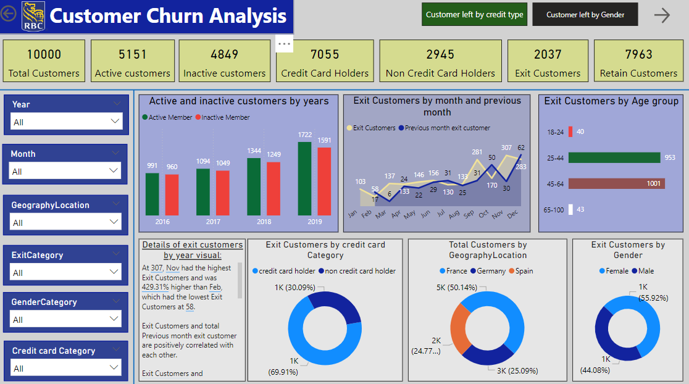

This project focuses on cleaning and analyzing a dataset that tracks layoffs across various industries ,contries and location worldwide. The primary objective is to ensure the dataset is accurate, consistent, and ready for deeper analytical queries.
In this project we remove dublicates,standardize the data ,removed null values or blanks and removed unwanted columns

This project involves conducting an Exploratory Data Analysis (EDA) on a dataset that documents global layoffs across various industries ,contries and location.
The primary goal is to uncover patterns, trends, and insights that can inform further analysis or business decisions.
Key steps in the EDA process includes data Profiling,summary statistics,trend analysis,geographical analysis,industry-specific insights

Developed an interactive dashboard to analyze customer churn patterns for RBC Bank, using data visualization and predictive analytics to identify key factors contributing to customer attrition.

In this project, I developed an interactive HR Analytics dashboard aimed at providing key insights into
workforce metrics and improving human resource decision-making. The dashboard offers a comprehensive view of employee data,
allowing HR teams to analyze trends, identify potential issues, and optimize workforce strategies.

Incorporate data analysis techniques,specializing in time series analysis,to deliver valuable insights,Interactive dashboard creation.driving bussiness success